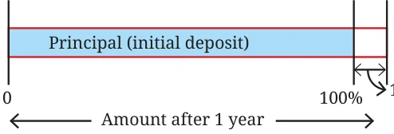
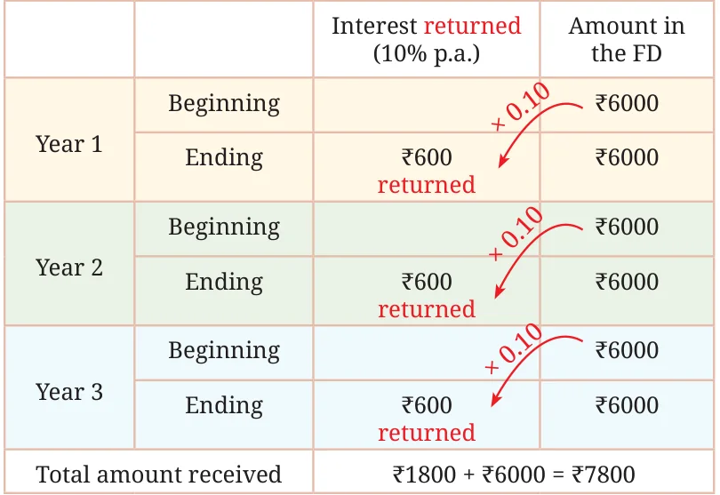
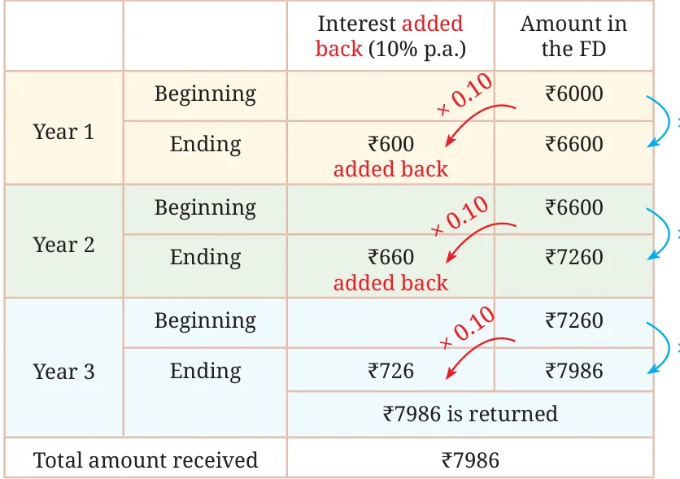
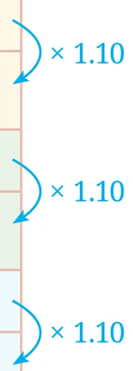

You might have come across statements like, "1 year interest for FD (Fixed Deposit) in the bank @ 6% per annum" or "Savings account with interest @ 2.5% per annum". Interest is the extra money paid by institutions like banks or post offices on money deposited (kept) with them. Interest is also paid by people or institutions when they borrow money.
In a Fixed Deposit (FD), you deposit a specific amount of money for a fixed period at a predetermined interest rate. The money remains locked for the chosen duration, and the bank pays you interest on it. You cannot withdraw the amount before the maturity date without incurring a penalty. At the end of the term, you receive both your original deposit and the interest earned.

For example, a bank says that the interest rate for fixed deposits is 10% p.a. What do you understand by this statement? What is the ‘p.a.’ next to the percentage? ‘p.a.’ is the short form of per annum, which means for every year. The specified interest rate indicates that if you invest ₹6000 as a deposit for a year with the bank, they will give you ₹600 as interest on this deposit. The 10% is the rate of interest and the ₹6000 on which the interest is calculated is the principal. The amount after 1 year in your bank account will be
\(6000 + (0.10 \times 6000)\)

(principal) + (10% interest on principal)
\(= 6000 + 600 = 6600.\)
In other words, the amount deposited, ₹6000, will become 110% (or increase by 10%),
\(6000 \times 110\% = 6000 \times \frac{110}{100} = 6000 \times 1.1 = 6600\).
This can also be expressed as
Amount after 1 year = Principal (P) + rate of interest (r) of P
Example 7: If one deposits ₹6000 in the bank, what is the amount after 3 years?
That depends on the choice of FD. There are two possibilities:
Option 1: The interest is paid out regularly (for example, every year). The principal amount is returned after the maturity period.


Option 2: The interest gained every time (say after each year) is added back to the FD, thus increasing the principal amount for the subsequent period. After the maturity period, the entire amount is returned. This phenomenon is called compounding.


We can see that with compounding, the final amount is more.
Example 8: What percent is the total amount received with respect to the amount deposited in both the options?
This can be calculated by finding \(\frac{\text{total amount received}}{\text{amount deposited}} \times 100\).
| Without Compounding | With Compounding |
|---|---|
| \(\frac{7800}{6000} \times 100 = 130\% = 1.3.\) | \(\frac{7986}{6000} \times 100 = 133.1\% = 1.331.\) |
| In other words, the total amount received \(= 6000 \times (1 + 0.1 + 0.1 + 0.1)\) \(= 6000 \times 1.3.\) | In other words, the total amount received \(= 6000 \times 1.1 \times 1.1 \times 1.1.\) \(= 6000 \times 1.331\). |
| The percentage gain over 3 years is 30%. | The percentage gain over 3 years is 33.1%. |